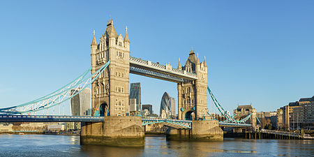
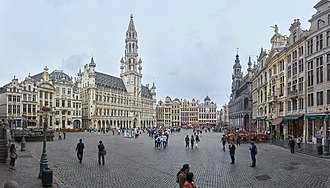
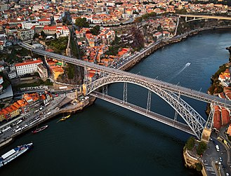
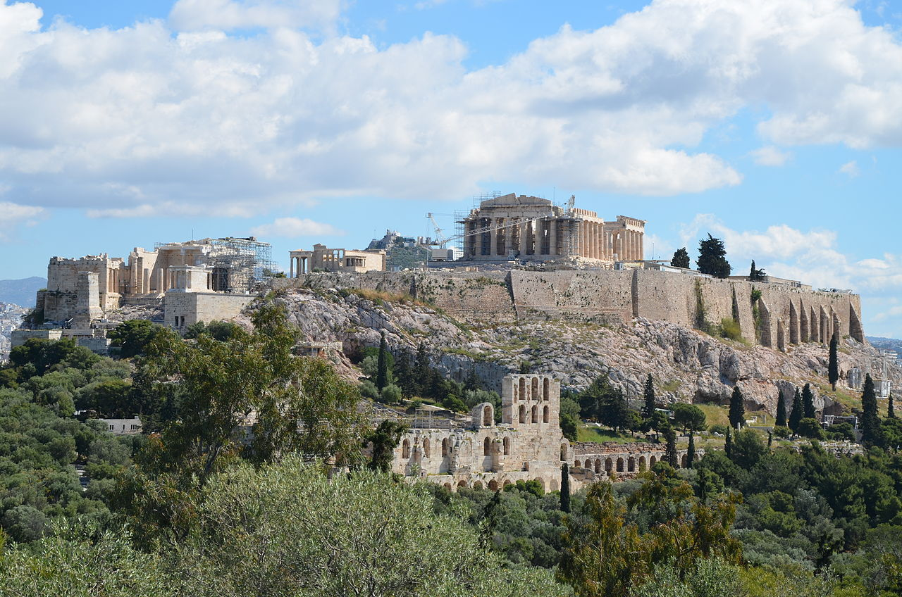

Europe is a continent located entirely in the Northern Hemisphere and mostly in the Eastern Hemisphere. It comprises the westernmost peninsulas of the continental landmass of Eurasia,[10] and is bordered by the Arctic Ocean to the north, the Atlantic Ocean to the west, the Mediterranean Sea to the south, and Asia to the east. Europe is commonly considered to be separated from Asia by the watershed of the Ural Mountains, the Ural River, the Caspian Sea, the Greater Caucasus, the Black Sea, and the waterways of the Turkish Straits.[11] Although much of this border is over land, Europe is generally accorded the status of a full continent because of its great physical size and the weight of its history and traditions.
Europe covers about 10,180,000 km2 (3,930,000 sq mi), or 2% of the Earth's surface (6.8% of land area), making it the second smallest continent (using the seven-continent model). Politically, Europe is divided into about fifty sovereign states, of which Russia is the largest and most populous, spanning 39% of the continent and comprising 15% of its population. Europe had a total population of about 746 million (about 10% of the world population) in 2018.[2][3] The European climate is largely affected by warm Atlantic currents that temper winters and summers on much of the continent, even at latitudes along which the climate in Asia and North America is severe. Further from the sea, seasonal differences are more noticeable than close to the coast.
European culture is the root of Western civilization, which traces its lineage back to ancient Greece and ancient Rome.[12][13] The fall of the Western Roman Empire in 476 AD and the subsequent Migration Period marked the end of Europe's ancient history and the beginning of the Middle Ages. Renaissance humanism, exploration, art and science led to the modern era. Since the Age of Discovery, started by Portugal and Spain, Europe played a predominant role in global affairs. Between the 16th and 20th centuries, European powers colonized at various times the Americas, almost all of Africa and Oceania, and the majority of Asia.
The Age of Enlightenment, the subsequent French Revolution and the Napoleonic Wars shaped the continent culturally, politically and economically from the end of the 17th century until the first half of the 19th century. The Industrial Revolution, which began in Great Britain at the end of the 18th century, gave rise to radical economic, cultural and social change in Western Europe and eventually the wider world. Both world wars took place for the most part in Europe, contributing to a decline in Western European dominance in world affairs by the mid-20th century as the Soviet Union and the United States took prominence.[14] During the Cold War, Europe was divided along the Iron Curtain between NATO in the West and the Warsaw Pact in the East, until the revolutions of 1989 and fall of the Berlin Wall.
In 1949, the Council of Europe was founded with the idea of unifying Europe to achieve common goals and prevent future wars. Further European integration by some states led to the formation of the European Union (EU), a separate political entity that lies between a confederation and a federation.[15] The EU originated in Western Europe but has been expanding eastward since the fall of the Soviet Union in 1991. The currency of most countries of the European Union, the euro, is the most commonly used among Europeans; and the EU's Schengen Area abolishes border and immigration controls between most of its member states and some non-members states. There exists a political movement favouring the evolution of the European Union into a single federation encompassing much of the continent.
The Basílica de la Sagrada Família (Catalan: [bəˈzilikə ðə lə səˈɣɾaðə fəˈmiljə]; Spanish: Basílica de la Sagrada Familia; 'Basilica of the Holy Family'),[4] also known as the Sagrada Família, is a large unfinished Roman Catholic minor basilica in the Eixample district of Barcelona, Catalonia, Spain. Designed by the Spanish architect Antoni Gaudí (1852–1926), his work on the building is part of a UNESCO World Heritage Site.[5] On 7 November 2010, Pope Benedict XVI consecrated the church and proclaimed it a minor basilica.[6][7][8]
On 19 March 1882, construction of the Sagrada Família began under architect Francisco de Paula del Villar. In 1883, when Villar resigned,[5] Gaudí took over as chief architect, transforming the project with his architectural and engineering style, combining Gothic and curvilinear Art Nouveau forms. Gaudí devoted the remainder of his life to the project, and he is buried in the crypt. At the time of his death in 1926, less than a quarter of the project was complete.[9]
Relying solely on private donations, the Sagrada Família's construction progressed slowly and was interrupted by the Spanish Civil War. In July 1936, revolutionaries set fire to the crypt and broke their way into the workshop, partially destroying Gaudí's original plans, drawings and plaster models, which led to 16 years of work to piece together the fragments of the master model.[10] Construction resumed to intermittent progress in the 1950s. Advancements in technologies such as computer aided design and computerised numerical control (CNC) have since enabled faster progress and construction passed the midpoint in 2010. However, some of the project's greatest challenges remain, including the construction of ten more spires, each symbolising an important Biblical figure in the New Testament.[9] It was anticipated that the building would be completed by 2026, the centenary of Gaudí's death[11] but this has now been delayed due to the COVID-19 pandemic.[12]

Tower Bridge
Tower Bridge is a Grade I listed combined bascule and suspension bridge in London, built between 1886 and 1894, designed by Horace Jones and engineered by John Wolfe Barry. The bridge crosses the River Thames close to the Tower of London and is one of five London bridges owned and maintained by the Bridge House Estates, a charitable trust founded in 1282. The bridge was constructed to give better access to the East End of London, which had expanded its commercial potential in the 19th century. The bridge was opened by Edward, Prince of Wales and Alexandra, Princess of Wales in 1894.
The bridge is 800 feet (240 m) in length and consists of two 213-foot (65 m) bridge towers connected at the upper level by two horizontal walkways, and a central pair of bascules that can open to allow shipping. Originally hydraulically powered, the operating mechanism was converted to an electro-hydraulic system in 1972. The bridge is part of the London Inner Ring Road and thus the boundary of the London congestion charge zone, and remains an important traffic route with 40,000 crossings every day. The bridge deck is freely accessible to both vehicles and pedestrians, whereas the bridge's twin towers, high-level walkways and Victorian engine rooms form part of the Tower Bridge Exhibition.
Tower Bridge has become a recognisable London landmark. It is sometimes confused with London Bridge, about 0.5 miles (0.80 km) upstream, which has led to a popular urban legend about an American purchasing the wrong bridge. Several stunt pilots have flown underneath the bridge, including the pioneering Francis McClean.
Colosseum
The Colosseum (/ˌkɒləˈsiːəm/ KOL-ə-SEE-əm; Italian: Colosseo [kolosˈsɛːo]) is an oval amphitheatre in the centre of the city of Rome, Italy, just east of the Roman Forum. It is the largest ancient amphitheatre ever built, and is still the largest standing amphitheatre in the world today, despite its age. Construction began under the emperor Vespasian (r. 69–79 AD) in 72[1] and was completed in 80 AD under his successor and heir, Titus (r. 79–81).[2] Further modifications were made during the reign of Domitian (r. 81–96).[3] The three emperors that were patrons of the work are known as the Flavian dynasty, and the amphitheatre was named the Flavian Amphitheatre (Latin: Amphitheatrum Flavium; Italian: Anfiteatro Flavio [aɱfiteˈaːtro ˈflaːvjo]) by later classicists and archaeologists for its association with their family name (Flavius).[citation needed]
The Colosseum is built of travertine limestone, tuff (volcanic rock), and brick-faced concrete. The Colosseum could hold an estimated 50,000 to 80,000 spectators at various points in its history[4][5] having an average audience of some 65,000;[6] it was used for gladiatorial contests and public spectacles including animal hunts, executions, re-enactments of famous battles, and dramas based on Roman mythology, and briefly mock sea battles. The building ceased to be used for entertainment in the early medieval era. It was later reused for such purposes as housing, workshops, quarters for a religious order, a fortress, a quarry, and a Christian shrine.[citation needed]
Although substantially ruined because of earthquakes and stone-robbers (for spolia), the Colosseum is still an iconic symbol of Imperial Rome and was listed as one of the New7Wonders of the World.[7] It is one of Rome's most popular tourist attractions and also has links to the Roman Catholic Church, as each Good Friday the Pope leads a torchlit "Way of the Cross" procession that starts in the area around the Colosseum.[8]
The Colosseum is also depicted on the Italian version of the five-cent euro coin.

The Grand Place
The Grand Place (French, pronounced [ɡʁɑ̃ plas]; "Grand Square"; also used in English[1]) or Grote Markt (Dutch, pronounced [ˌɣroːtə ˈmɑr(ə)kt] (About this soundlisten); "Grand Market") is the central square of Brussels, Belgium. It is surrounded by opulent Baroque guildhalls of the former Guilds of Brussels and two larger edifices; the city's Flamboyant Town Hall, and the neo-Gothic King's House or Breadhouse (French: Maison du Roi, Dutch: Broodhuis) building containing the Brussels City Museum.[2][3][4] The square measures 68 by 110 metres (223 by 361 ft).
The Grand Place is the most important tourist destination and most memorable landmark in Brussels. It is also considered one of the most beautiful squares in Europe,[5][6][7] and has been a UNESCO World Heritage Site since 1998.[8] The square frequently hosts festive and cultural events, among them, in August of every even year, the installation of an immense flower carpet in its centre.

Luis 1st Bridge
The Dom Luís I Bridge (Portuguese: Ponte de Dom Luís I), or Luís I Bridge, is a double-deck metal arch bridge that spans the River Douro between the cities of Porto and Vila Nova de Gaia in Portugal. At its construction, its 172 metres (564 ft) span was the longest of its type in the world. It has been confused with the nearby Maria Pia Bridge, a railway bridge that was built 9 years earlier (and is located 1 kilometre (0.62 mi) to the east), which is similar in aspect to the Luís I bridgeIn 1879, Gustave Eiffel presented a project to construct a new bridge over the Douro, with a high single deck in order to facilitate ship navigation.[2] This project was rejected due to dramatic growth of the urban population, which required a re-thinking of the limits of a single-deck platform.[2]
A competition was initiated in November 1880, in order to construct a double-deck metal bridge, which included projects by Compagnie de Fives-Lille, Cail & C., Schneider & Co., Gustave Eiffel, Lecoq & Co., Société de Braine-le-Comte, Société des Batignolles (which submitted two ideas), Andrew Handyside & Co., Société de Construction de Willebroek (also two projects) and John Dixon.[2] It was in January of the following year that deliberations by the committee supported the project of Société de Willebroek, a design that cost 369 000$000[clarification needed] réis and provided better carrying capacity.[2] On 21 November 1881, the public work was awarded to the Belgian Société de Willebreok, from Brussels, for 402 contos. It was to be administrated by Théophile Seyrig, a disciple of Gustave Eiffel and author of the project. Seyrig had worked on the D. Maria bridge with Eiffel, hence the resemblance of his new bridge to the D. Maria bridge.[2] Construction began on the Ponte Luís I alongside the towers of an earlier railway suspension bridge, the Ponte Pênsil, which was disassembled.[2]
By 26 May 1886, the first weight experiments began, with the transport of a 2,000 kilograms (4,400 lb) per metre.[2] On 30 October construction of the main arch and upper deck were concluded, resulting in its inauguration the very next day.[2] On 1 November, a toll system began to operate under the administration of the winning company, that was equal to 4 reís per person.[2] The following year the lower deck was inaugurated, completing the project. During its ceremonies, the bridge was blessed by Bishop D. Américo.[2]
By the turn of the century (1908) electric carriages were installed in the city centre, extending to the bridge.[2]

Acropolis of Athens
The Acropolis of Athens is an ancient citadel located on a rocky outcrop above the city of Athens and contains the remains of several ancient buildings of great architectural and historical significance, the most famous being the Parthenon. The word acropolis is from the Greek words ἄκρον (akron, "highest point, extremity") and πόλις (polis, "city").[1] The term acropolis is generic and there are many other acropoleis in Greece. During ancient times it was known also more properly as Cecropia, after the legendary serpent-man, Cecrops, the supposed first Athenian king.
While there is evidence that the hill was inhabited as far back as the fourth millennium BC, it was Pericles (c. 495–429 BC) in the fifth century BC who coordinated the construction of the buildings whose present remains are the site's most important ones, including the Parthenon, the Propylaea, the Erechtheion and the Temple of Athena Nike.[2][3] The Parthenon and the other buildings were seriously damaged during the 1687 siege by the Venetians during the Morean War when gunpowder being stored in the Parthenon by the Ottomans was hit by a cannonball and exploded.[4]